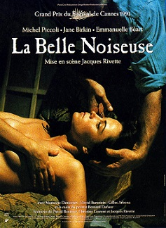

Jacques Rivette
1991
240 minutes
This is a Rivette film and it has a punishing four-hour running time. This will fly by: for a good chunk of the running time you'll be looking at an attractive naked woman, so it will feel like a mere three hour slog. It stars Michel Piccoli, whom you may recognize as Brigitte Bardot's husband from Contempt but probably not since this was filmed 28 years later. Jane Birkin is also in it, who previously teamed up with Serge Gainsbourg to make Charlotte Gainsbourg. The film also stars Emmanuelle Béart, who is well known for being very naked for a very long time in this movie, but also did a lot of other things you haven't seen.
This is a slow movie and it mostly about the process of making art, which seems to be a Rivette obsession. He really likes showing how the sausage is made, whether it be illustrations and painting or experimental theater. The bulk of the movie is like looking over someone's shoulder at a life drawing class and, if you're lucky, seeing it projected on a big screen with a good sound system. There's some actual plot as well since the artist's wife and old muse played by Jane Birkin doesn't appreciate his new muse and inspiration taking up for a work he started with her and gave up on years ago.
There's a pretty funny and meaningful bit where she gets quite upset about him using an old canvas with a sketch of her on it and basically painting the new girl's ass over her face. But most of this is atmospheric. You'll be watching someone drawing and later painting a nude figure in real time, usually with no dialogue so the only sounds are the scratching of pencils or brushes against paper or canvas.
Essentially this is ASMR: The Movie. ASMR doesn't do a lot for you now, though you used to get it in a pleasant, non-erotic sense when you got your hair cut as a kid. At least you haven't been able to really get that goosebump feeling from the many online videos on the subject--not that you've tried very hard. Results may vary in real life, though barber's clippers usually don't do it for you anymore since that's typically a daily grooming thing for you.
Time to choose something different: